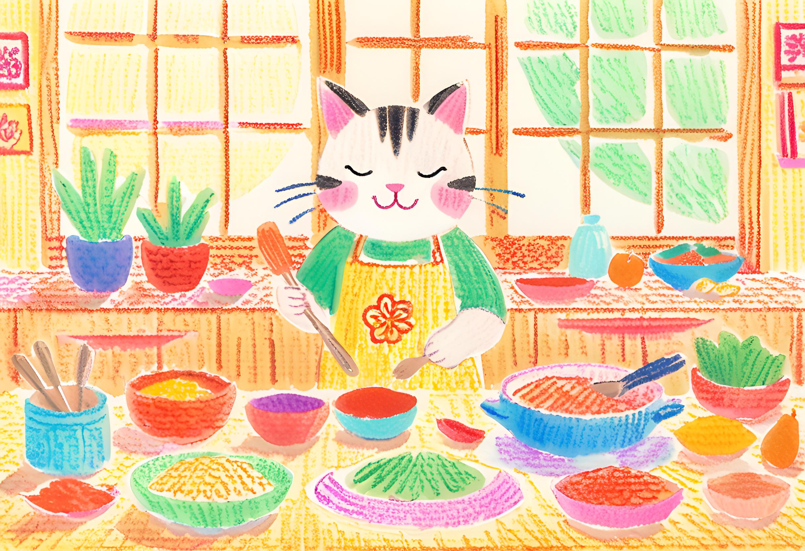

Welcome!
Hi there! I'm Adeline, a passionate foodie and home cook from the vibrant country of Malaysia. Growing up surrounded by the rich and diverse flavors of Southeast Asia, I fell in love with the art of blending spices, textures, and aromas that make our cuisine so unique.
I created this website to share my love for Southeast Asian cooking with the world. My goal is to make these authentic recipes approachable and enjoyable for everyone, whether you're a seasoned chef or just starting your culinary journey.
Malaysian Food Is...
A colorful blend of influences from Malay, Chinese, Indian, and other cultural cuisines. Let’s explore this world of flavor together!
